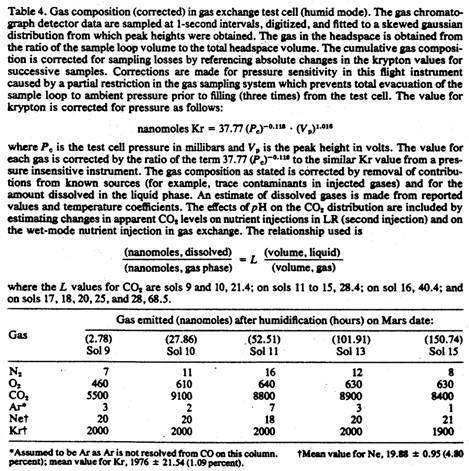

The Viking
Biological Investigation: Preliminary Results
Klein, H.P. et al.
Science, 194, 4260, 99-105, October 1976
Abstract. Three
different types of biological experiments on samples of martian surface
material (“soil”) were conducted inside the Viking lander. In the carbon
assimilation or pyrolytic release experiment, 14CO2 and 14CO
were exposed to soil in the presence of light. A small amount of gas was found
to be converted into organic material. Heat treatment of a duplicate sample
prevented such conversion. In the gas exchange experiment, soil was first
humidified (exposed to water vapor) for 6 sols and then wet with a complex
aqueous solution of metabolites. The gas above the soil was monitored by gas
chromatography. A substantial amount of O2 was detected in the first
chromatogram taken 2.8 hours after humidification. Subsequent analyses revealed
that significant increases in CO2 and only small changes in N2 had
also occurred. In the labeled release experiment, soil was moistened with a
solution containing several 14C-labeled organic compounds. A
substantial evolution of radioactive gas was registered. but did not occur with
a duplicate heat-treated sample. Alternative chemical and biological
interpretations are possible for these preliminary data. The experiments are
still in process, and these results so far do not allow a decision regarding
the existence of life on the planet Mars.
We present here a preliminary progress report on the Viking biological investigation, through its first month. Details of the scientific concepts behind each of the experiments, as well as examples of the kinds of results that are obtained when these concepts are tested with the use of terrestrial samples, have been described (1-3). The actual flight instrumentation and the tests to which the flight instruments were subjected have also been described (4).
During the manufacture of the flight instruments for the biology experiments. rigorous clean-room techniques were employed to minimize airborne contamination (5), after which the fully assembled flight hardware was heated at 120° = 1.7°C for M hours in an atmosphere of dry 100 percent nitrogen prior to shipment to the Kennedy Space Center. Here the instruments were installed in the landers under clean-room conditions and heated once more when the encapsulated landers were subjected to terminal sterilization. This time the heating regime was 112° ± 1.8°C for periods sufficient to reduce the spacecraft biological contamination loads to acceptable limits (6).
About a month after Viking 1 went into orbit around Mars, the biology instrument was turned on briefly for the first time since launch. At this time, 39 hours before separation, selected valves within the instrument were automatically closed to prevent exhaust products from entering the instrument during the descent phase when the instrument was powered down. On 22 July 1976, 2 days after landing, the instrument was again turned on. With activation of both radioactivity detectors, background counts were taken in dual- and single-channel counting modes. A chromatogram was also taken, and the appropriate incubation cells were rotated into position to receive surface samples. The sample for the biology investigation reported here was acquired in the morning of sol 8 (a Mars day is called a sol and equals 24 hours 39 minutes) from the surface at a depth of 0 to 4 cm in an area consisting chiefly of fine-grained material. The sample was introduced into the instrument via a soil processor on top of the lander, which screened out coarse material, larger than 1.5 min; 7 cm3 of the resulting smaller-grained material was metered down into the biology instrument. Samples for the individual biology experiments were metered and distributed into the cells for subsequent use, as described below. The temperature of the sample was below 0°C during acquisition and delivery, and was 9°C during the period of storage in the test cells prior to the initiation of the experiment. The major events for the three experiments are outlined in Table 1.
Our overall strategy called for relatively short incubation periods for the first sample. If these proved negative, considerably longer periods could be used in later incubations. Table 2 shows the various incubation sequences that are possible for the three experiments. The second Viking spacecraft landed at a more northerly latitude and a colder environment. After January 1977, at this site, incubation temperatures can he significantly lowered within the biology instrument. Part of the strategy, therefore, is to incubate martian soils at these low temperatures.
The first actual science data from the biology instrument were returned from Mars 4 weeks before this report was written. In this interval, during which the instrument functioned nominally, all three of the experiments yielded data indicating that the surface material of Mars is chemically or biochemically quite active. Under normal circumstances, it would be premature to report biological experiments in progress before the data are amenable to ready interpretation. However, the unique nature of this investigation impels us to make this report, and we are fully cognizant of its preliminary nature (7).
The carbon assimilation experiment. The pyrolytic release (PR) or carbon assimilation experiment tests the surface material of Mars for the presence of microorganisms by measuring the incorporation of radioactive CO2 and CO into the organic fraction of a soil sample. The reasons for believing that martian life, if it exists, would be based on carbon chemistry have been summarized (8). The experiment is carried out under actual martian conditions, insofar as these can be attained within the Viking spacecraft, the premise being that, if there is life on Mars, it is adapted to martian conditions and is probably maladapted to extreme departures from those conditions.
The experiment operates as follows: A sample of Mars, consisting of martian atmosphere at ambient pressure and 0.25 cm3 of soil is placed within the 4-cm3 test cell of the instrument. Martian sunlight is simulated by a 6-watt high-pressure xenon lamp, filtered to remove wavelengths shorter than 320 nm. The radiant energy reaching the test chamber, integrated between 335 and 1000 nm, is approximately 20 percent of the maximum solar flux at Mars in this spectral interval, or about 8 mw cm-2. The short end of the spectrum is removed to prevent the surface-photocatalyzed synthesis of organic compounds from CO that is induced by wavelengths below 300 nm (9). Except under the special conditions of the photochemical synthesis, these wavelengths are generally destructive to organic matter. It is therefore reasonably certain that, if there are organisms on Mars, they have devised radiation protective mechanisms. Laboratory tests have shown that the experiment detects both light and dark fixation of 14CO2 and 14CO by soil microbes (10), and the instrument can be operated in either the light or dark mode on Mars. The experiments so far conducted were performed in the light. The option exists to inject water vapor into the incubation chamber, but it was not exercised in these experiments.
At the start of an experiment, 20 µl of a mixture of 14CO2 and 14CO (92 : 8 by volume, total radioactivity 22 µc) is injected into the test cell from a reservoir. The resulting pressure increase is 2.2 mbar over ambient which, at the Viking 1 landing site, is 7.6 mbar. The martian atmosphere is about 95 percent CO2 and about 0.1 percent CO. The addition of the radioactive gases increases the partial pressure of CO2 by 28 percent and that of CO 23-fold.
The test chamber and its contents are illuminated for 120 hours at a temperature that depends on both the ambient martian temperature and the quantity of heat generated within the spacecraft. In the two experiments described, the incubation temperatures were 17° ± 1°C and 15° ± 1°C, respectively, with a brief upward excursion in the second (control) experiment to 20°C. This temperature range is clearly above the soil surface temperature at the Viking 1 site, where a maximum of -5°C has been estimated during these observations (11).
At the end of the incubation period, the unreacted 14CO2 and 14CO are vented at 120°C from the test chamber, and the soil is heated to 625°C to pyrolyze any organic matter it contains. The volatile products (including unreacted 14CO2 and 14CO desorbed from the walls and soil particles) are swept from the chamber by a stream of He and introduced into a column of Chromosorb P coated with CuO which functions as an organic vapor trap, operating at 120°C. Organic fragments (larger than methane) are retained by the column, but 14CO2 and 14CO pass through and their radioactivity is counted; this count is referred to as peak 1. The column temperature is then brought to 650°C, releasing organic compounds and simultaneously oxidizing them to CO2 by means of the CuO contained in the column packing. The radioactivity of this 14CO2 is called peak 2; it measures organic matter synthesized from 14CO2 or 14CO during the incubation period.
The results are shown in Table 3. Experiment 1 was an active experiment, conducted as described above. Experiment 2 was a control in which a second portion of the same surface sample was heated to 175°C for 3 hours before the start of incubation. The high background radioactivity comes primarily from two radioisotopic thermoelectric generators that supply power to the lander. Counting times were sufficiently long to detect approximately 10 count/min above this background. The counts were remarkably free of noise, except during the latter part of the second experiment when some noisy segments appeared. The noise was not random since the errors were all in the same (upward) direction. These segments were edited out before the data were averaged. All the counting rates summarized in Table 3 are Poisson distributed.
The “expected” counting rates (Table 3) are those predicted if no 14C is fixed into organic matter. These counts represent the fraction of peak 1 retained at 120°C and eluted at 650°C. This fraction is known from laboratory tests: when peak 1 equals 104 count/min, the maximum fraction retained is 2 x 10-3 or 15 count/min for the experiments reported.
Analysis of the results shows that a small but significant formation of organic matter occurred in experiment 1. The inhibition of this process in experiment 2 shows it to be heat labile. Until a dark control is completed, we cannot know whether the fixation is light dependent. The amount of organic carbon represented by 96 – 15 = 81 count/min is equivalent to the reduction of 7 pmole of CO or 26 pmole of CO2. Laboratory experience based on terrestrial soils suggests that two or three times more organic matter may remain in the pyrolyzed soil as a nonvolatile tar (10).
Although these preliminary findings could be attributed to biological activity, several experiments remain to be done before such an interpretation can be considered likely. In particular, the effect observed in experiment 1 must be confirmed in a second test, and the presence of organic matter in the martian surface must be demonstrated. Given the unusual conditions that prevail at the surface of Mars, the possibility of nonbiological reduction of CO or CO2 cannot be excluded at this time.
The gas exchange experiment. The gas exchange experiment (GEX) measures compositional changes in the atmosphere above a soil sample upon addition of aqueous nutrient medium, and from these data it attempts to show the presence of microbial activity. The results from the first 20 sols of incubation show significant changes in the composition of the experimental atmosphere.
GEX activities that occurred after landing, up to the end of the first incubation cycle, are given in Table 1. Descriptions of the concept governing the design of the experiment and results obtained have been described (12).
The first incubation cycle begins with the addition of 1 cm3 (13) of packed martian soil to the incubation chamber. In the process of loading the soil and sealing the test cell on sol 8, martian atmosphere was trapped within the chamber at the prevailing pressure. The mixture of Kr, CO2, and He gases (14) and 0.57 cm3 (15) of aqueous nutrient medium containing neon were added to the test cell. This amount of nutrient was added to the bottom of the test cell so that the soil sample was contacted by water vapor only, and not by the liquid medium. Results of the analyses of the headspace gases during the humid (water vapor) mode are shown in Table 4. All results are corrected for the initial contributions of the original trapped martian atmosphere; the added Kr, CO2, and He gas mixture; the trace amounts of gases introduced by the nutrient injection; and losses from sampling the headspace gas. Calculation of the actual gas concentrations is based on their partitioning between the gas and liquid phases at the incubation temperature (16) (Table 4).

The chromatogram shows that carbon dioxide, oxygen, nitrogen, and argon and carbon monoxide (measured as a single peak) are evolved from the soil sample when warmed to 8° to 10°C and humidified. The maximum amount of nitrogen gas, 16 nmole, appears on sol 11 and decreases to one-half of this value by sol 15. Oxygen, on the other hand, after reaching its maximum on sol 11, appears to plateau. If one assumes oxidation of ascorbic acid in the medium, the actual total amount of oxygen produced equals 725 nmole (640 released into the atmosphere plus the 85 nmole consumed in the oxidation of the added ascorbic acid). The maximum amount of CO2 produced on sol 10 is approximately 9100 nmole which decreases on sol 11 to 8800 nmole. As is indicated later, the readsorption of CO2, even after corrections for solubility, is likely associated with basicity changes in the mixture of soil and aqueous nutrient. No conclusion on the presence of CO can be drawn because of the low values of the Ar and CO peak. The values of Ne and Kr demonstrate the consistency of the internal standards and the apparent precision for the gas analyzers.
The anomalous amount of O2 accompanying the desorption of CO2 represents an enrichment of 18 times in the martian soil. The results suggest either that molecular oxygen is held in relatively large quantities in the martian soil and released upon warming in the incubation test cell or that oxygen is generated from some unstable oxidant upon warming or, more likely, upon contact with water vapor.
During the entire first cycle, no H2, NO, or CH4 was detected in the headspace. The absence of hydrogen upon wetting the soil seems to preclude the presence of metallic iron in concentrations greater than 0.003 percent.
Absorption of CO2 at martian surface temperatures and desorption at the incubation temperature of the test cell could account for some of the desorption during the 21.23 hours that the soil was sealed in the test cell. However, the data suggest that the major desorption of the CO2 occurred in the 2.78 hours immediately after the humidification of the test cell. These points remain to be investigated in the laboratory under similar conditions.
On sol 16, an additional 2.27 cm3 of nutrient was injected. Including the amount added earlier, the nutrient now measures 2.84 cm3, and wets the soil. The data for the wet mode are shown in Table 5.
The decrease in CO2 seen immediately after wetting the soil may be due to pH changes of the soil-aqueous solution mixture. The slow rise in CO2 content of the atmosphere after this initial decrease is not readily explained. This could be the result of further changes in this pH of the wet soil, or the oxidation of some of the substrates in the medium by the oxidants postulated above. That the CO2 arises as a result of biological oxidation cannot, of course, be ruled out at this time. The decrease in oxygen can be accounted for by the additional ascorbic acid in the fresh nutrient added on sol 16.
The changes observed in the N2 content of the incubation atmosphere are minimal and may be explained by a number of processes including sorption by the soil, or by Van Slyke reactions between the α-amino acids of the medium with residual nitrites in the soil. On the other hand, a biological origin (denitrification of added nitrates in the medium) is also possible.
The labeled release experiment. The labeled release (LR) experiment (1, 17) seeks to detect metabolism or growth through radiorespirometry (18). The radioactive nutrient used for the test consists of seven simple organic substrates (formate, glycolate, glycine, D- and L-alanine, D- and L-lactate), each present at 2.5 x 10-4 M and each equally and uniformly labeled with 14C (8 µc/µmole).
To initiate the LR experiment on Mars, 0.5 cm3 of the sample was placed inside a test cell, which is connected by a tube (33 by 0.2 cm, inside diameter) to another chamber flanked with two solid-state beta detectors. The background radioactivity, caused primarily by the radioisotopic thermoelectric generators powering the lander, was counted for approximately 24 hours prior to nutrient injection and found to be 490 count/min. The sample was then injected with 0.115 ml of the radioactive nutrient. This volume of nutrient contains approximately 257,000 count/min, each of the 17 carbons of the seven substrates contributing approximately 15,000 count/min (corresponding to 29 nmole of carbon). Approximately 7 sols after the first nutrient injection (Table 1), a second nutrient injection was made, and incubation was continued for an additional 6 sols. After each nutrient addition, radioactive gas evolved into the headspace above the sample equilibrated with the gas volume in the detector chamber. The gas accumulating within the detector chamber was continuously monitored for radioactivity during the incubation period. The temperature of the detector and the head end of the test cell were also monitored throughout the cycle. At the end of this incubation, a cycle was conducted with a second 0.5-cm3 portion of the original sample held in reserve in the lander for this purpose. This was placed in a clean test cell, sealed, and heated at 170°C for 3 hours. After the cell cooled and background had been counted for approximately 20 hours, nutrient was injected, and the evolved radioactive gas was compared to that from the first analysis. Details of the nutrient, instrumentation, and terrestrial assays have been described (17).
Upon injection of the labeled nutrient on sol 10, a vigorous production of radioactive gas was observed in the test cell as shown in Fig. 1, where data for the entire first cycle of the experiment are presented. The initial course of evolution of gas resembled that displayed by microbiologically active terrestrial soils (17). However, the rate of evolution of radioactive gas from the martian sample slowed more rapidly than would have been expected for a terrestrial soil, and approached a plateau of approximately 10,000 count/min over background. The magnitude of the response corresponds to approximately 65 percent of one of the labeled carbons in the nutrient. These facts could be an indication that only one of the substrates may have been involved in the reaction.
Upon addition of a second volume of labeled nutrient on sol 17, an immediate (within 10 minutes) increase in evolution of radioactive gas was followed by a rapid decrease of radioactivity until a new plateau was reached at approximately 8000 count/min. This decline accounts for approximately one-third of the total amount of gas that had been evolved, including the spike (Fig. 2) which appears immediately after the commanded nutrient injection. However, after reaching plateau, the radioactivity level slowly rose over the ensuing 6 sols at an average rate of approximately 40 count/min per sol. This rate is considerably less than that observed following the first injection.
In isolating the biology instrument against the martian diurnal temperature fluctuation (approximately 187° to 242°K) at the landing site, the thermal environment shown in Fig. 1 was imposed upon the LR module by the instrument temperature control system. Thus, the head end fluctuated between 9º and 13°C, and the detector temperature cycled between 14° and 26°C. Minor, regular patterns of fluctuation in the radioactivity curve correlate with the temperature of the test cell. Such fluctuations were anticipated and are not indicative of instrument anomalies.
Thirteen sols after the first injection, cycle 1 of the LR experiment was terminated. To remove the accumulated radioactive gas and dry the test cell, the detector and test cell were purged with helium. A clean test cell was then rotated under the head end, and both detectors and head end were heated during continuous helium purging to minimize the remaining radioactivity. Background was then counted for about 20 hours. The new background level after the analysis averaged 516 count/min compared to the average of 490 count/min prior to the first injection.
Because of the positive response in cycle 1, a control sequence was run in cycle 2. After the control sample was heated (as described earlier), the test cell was vented to equilibrate its headspace with the martian atmosphere. After venting, the radioactivity was observed to be 1300 count/min (including the 516 count/min background), a baseline level not expected to interfere seriously with the experiment.
After acquisition of the surface sample, nutrient was delivered to the heat-treated sample. The ensuing control data are shown in Fig. 2. Some immediate release of radioactive gas, totaling approximately 800 count/min above the new baseline of 1300 count/min, occurred. However, the released gas immediately began to disappear from the detector cell, and, within about 8 hours, the radioactivity was virtually at the baseline level of 1300 count/min. After this, a slight rise in radioactivity was observed, less than that seen in the latter part of the commanded injection phase of cycle 1.
Because most terrestrial control soils sterilized by heat demonstrate an immediate, low-level release of radioactive gas that quickly reaches a plateau and remains constant, the possibility was considered that the decline in radioactivity seen in Fig. 2 resulted from a gas leak in the test cell. The data obtained during background counts prior to the control show that the 1300-count/min baseline purged down to the approximate initial 516-count/min background level. Thus, radioactive gas was responsible for the elevated baseline prior to the first injection. If there were a leak, a reduction in the 1300 count/min would have been observed before the injection.
Discussion. The experiments described above give clear evidence of chemical reactions. The essential question is whether they are attributable to a biological system. We are unable at this time to give a clear answer to that question, partly because the planned experimental program is not yet completed, and partly because of the inherent difficulty in defining complex living organisms which may have developed and evolved in an environment completely different from that of the planet Earth.
An important consideration in evaluating the possibility of life on Mars is the chemical analysis of carbon compounds in the martian soil. Biemann et al. (19) reported that no organic compounds larger than methanol and propane, for example, were observed in the Viking 1 samples at detection limits that range from 0.1 to 50 parts per billion. The results are somewhat similar to those found in an Antarctic soil (No. 542, collected by R. E. Cameron) that has little organic material and appears not to support an active biota (20). These results, especially if reinforced by analyses at a second martian site, would tend to make biology on Mars less likely, at least in the terrestrial mode.
It is difficult to compare directly the results of the three biology experiments since each was conducted under different conditions. Nonetheless, it is interesting that the two experiments dealing directly with radioactive carbon chemistry yielded positive responses, and both were eliminated by heat sterilization of the martian sample.
These results violate none of the prima facie criteria for a biological process, and show some of the most general characteristics of known organisms. The positive result of the PR experiment signifies the reduction of CO or CO2, or metabolic exchange with reduced organic compounds, which are exhibited by all terrestrial organisms. On the other hand, nonbiological photoreduction of CO can also be demonstrated at shorter ultraviolet wavelengths (9), and catalytic dismutation of CO is also well established.
In contrast, the LR experiment requires conversion of oxidizable substrates into radioactive gas. In a terrestrial test, the collective results of a positive response in cycle 1 and its elimination by heat sterilization in cycle 2 would support the concept that microorganisms were present in the sample. The amplitude of the test response is an order of magnitude above that expected from a sterile soil, and the difference between the Mars test and the control cycle exceeds the 3σ level, which has been chosen as a criterion for a positive response (17). However, important caveats to such a conclusion are (i) the possible limitation of metabolism to one substrate and (ii) the lack of an exponential phase of gas evolution indicative of growth. Organisms in terrestrial soils attack more than one substrate, as evidenced by the fact that the plateaus attained generally represent 50 percent or more of the total label added (17). On Mars, however, utilization of only one of the offered terrestrial substrates might indicate a selective metabolism. The abrupt change in environmental conditions of the martian soil imposed by the biology instrument with respect to water and temperature, together with the relatively short time of the experiment, might readily account for lack of growth. The absence of a positive response to the second injection in cycle 1 similar to that seen from the first injection might be attributed to inhibition or death of the microorganisms.
Despite the suggestive character of these responses of the Mars sample, the environmental conditions on Mars are sufficiently different from those on Earth to require cautious interpretation. A high ultraviolet flux strikes the martian surface material, and may result in the production of highly reactive compounds capable of oxidizing the labeled nutrient. However, any explanation must account for the kinetics of the reaction as well as the heat lability of such oxidants or catalysts at 170° to 175°C. Similarly, the absorption of radioactive gas after the second injection of nutrient may be facilitated by alkalinity induced in the martian soil by wetting. An absorption of CO2 was also seen in the GEX upon wetting the sample.
Final interpretation of the results must .await the results from the investigations on the second lander, the completion of Viking 1 studies, and ground-based laboratory experiments.
HAROLD P. KLEIN
NASA Ames Research Center, Moffett Field, California 94035
NORMAN H. HOROWITZ
Division of Biology, California Institute of Technology, Pasadena 91125
GILBERT V. LEVIN
Biospherics Incorporated, Rockville, Maryland 20852
VANCE I. OYAMA
NASA Ames Research Center
JOSHUA LEDERBERG
Department of Genetics, Stanford University, Stanford, California 94305
ALEXANDER RICH
Department of Biology, Massachusetts Institute of Technology, Cambridge 02139
JERRY S. HUBBARD
Department of Biology, Georgia Institute of Technology, Atlanta 30332
GEORGE L. HOBBY
Department of Biology, California Institute of Technology
PATRICIA A. STRAAT
Biospherics Incorporated
BONNIE J. BERDAHL
GLENN C. CARLE
NASA Ames Research Center
FREDERICK S. BROWN
TRW Systems, One Space Park, Redondo Beach, California 90278
RICHARD D. JOHNSON
NASA Ames Research Center
References and Notes
1. N. H. Horowitz. J. S. Hubbard, G. L. Hobby, Icarus 16, 147 (1972).
2. G. V. Levin, ibid., p. 153.
3. V. I. Oyama, ibid., p. 167.
4. H. P. Klein. Origins Life 5, 431 (1974); H. P. Klein, J. Lederberg, A. Rich, N. H. Horowitz, V. I. Oyama, G. V. Levin, Nature (London) 262, 24 (1976).
5. J. J. McDade, in Planetary Quarantine: Principles, Methods, and Problems, L. B. Hall, Ed. (Gordon & Breach. New York, 1971), pp. 37-62.
6. L. B. Hall, in Foundations of Space Biology and Medicine, M. Calvin and O. G. Gazenko, Eds. (Science and Technology Information Office, NASA, Washington, D.C.. 1975), vol. 1, pp. 403-430.
7. Additional accounts of each of the three biological experiments are being prepared by the principal investigators and their coinvestigators: Norman H. Horowitz (pyrolytic release experiment), Gilbert V. Levin (labeled release experiment), and Vance I. Oyama (gas exchange experiment).
8. N. H. Horowitz, Accounts Chem. Res. 9, 1 (1976).
9. J. S. Hubbard. J. P. Hardy, N. H. Horowitz., Proc. Natl. Acad. Sci. U.S.A. 68, 474 (1971); J. S. Hubbard, J. P. Hardy, G. E. Voecks, E. E. Golub, J. Mol. Evol. 2, 149 (1973); .J. S. Hubbard. G. E. Voecks, G. L. Hobby, J. P. Ferris, E. A. Williams, D. E. Nicodem, ibid. 5, 223 (1975).
10. J. S. Hubbard, G. L. Hobby, N. H. Horowitz, P. J. Geiger, F. A. Morelli, Appl. Microbiol. 19, 32 (1970): J. S. Hubbard, Origins Life, in press.
11. H. Kieffer, personal communication.
12. V. I. Oyama. B. J. Berdahl, G. C. Carle, M. E. Lehwalt. H. S. Ginoza, Origins Life, in press; E. L. Merck and V. I. Oyama, Life Sciences Space Res. 8, 108 (1970); V. I. Oyama, E. L. Merck, M. P. Silverman, C. W. Boylen, in Proceedings of the Second Lunar Science Conference, A. A. Levinson, Ed. (MIT Press, Cambridge, Mass., 1971), vol. 2, p. 1931; V. I. Oyama. B. J. Berdahl, C. W. Boylen, E. L. Merck, in Third Lunar Science Conference, C. Watkins, Ed. (Lunar Science Institute, Houston, 1972), p. 590.
13. Solid volume of soil delivered was estimated to be 0.465 cm3.
14. The composition of the mixture was 5.51 percent Kr, 2.84 percent CO2. 91.47 percent He, 0.14 percent N2, 0.035 percent O2. The GEX test cell temperatures ranged from 8.3º to 10.8°C.
15. Nutrient volume injected into the test cell estimated from the quantity of Ne in the headspace above the incubating soil. Neon was added to the nutrient ampule before it was sealed.
16. H. L. Clever and R. Battino, in Solutions and Solubilities, M. R. J. Dack, Ed. (Wiley, New York, 1975), part I, chap. 7; T. J. Morrison and N. B. Johnstone, J. Chem. Soc. (1954), p. 3441; S. Y. Yet and R. E. Peterson, J. Pharm. Sci. 53, 822 (1964); J. D. Cos and A. J. Head, Trans. Faraday Soc. 58, 1839 (1962); W. H. Austin, E. Lacombe, P. W. Rand. M. Chatterjee, J. Appl. Physiol. 18, 301 (1963); T. J. Morrison and F. Billett, J. Chem. Soc. (1952), p. 3819.
17. G. V. Levin and P. A. Straat, Origins Life, in press.
18. G. V. Levin, Adv. Appl. Microbiol. 5, 95 (1963).
19. K. Biemann, J. Oro, P. Toulmin III, L. E. Orgel, A. O. Nier. D. M. Anderson, P. G. Simmonds, D. Flory, A. V. Diaz, D. R. Rushneak, J. A. Biller, Science, 194, 72 (1976).
20. N. H. Horowitz, R. E. Cameron, J. S. Hubbard, ibid. 176, 242 (1972).
21. We acknowledge the effective and tireless efforts of the engineers who are part of the Viking Biology Flight team and without whom these experiments could not have been accomplished. R. I. Gilje is chief engineer on this team, which also includes S. Loer, C. Reichwein, G. Bowman, and D. Buckendahl. Supported, in part, by NASA contracts NAS1-9690 (to G.V.L.), NAS1-12311 (to N.H.H.). NAS1-13422 (to J.S.H.). and by NASA grants NGR-05002308 (to N.H.H.) and NSG-7069 (to J.S.H.). We also acknowledge the profound contribution to the Viking mission and particularly to the development of life detection concepts, of our former colleague and deputy team leader. Dr. Wolf Vishniac. His untimely accidental death in Antarctica in 1973 deprived us of his keen insight and inquiring mind at a crucial time in this study. The invaluable assistance of Dr. Richard S. Young in the preparation of this manuscript is also acknowledged.